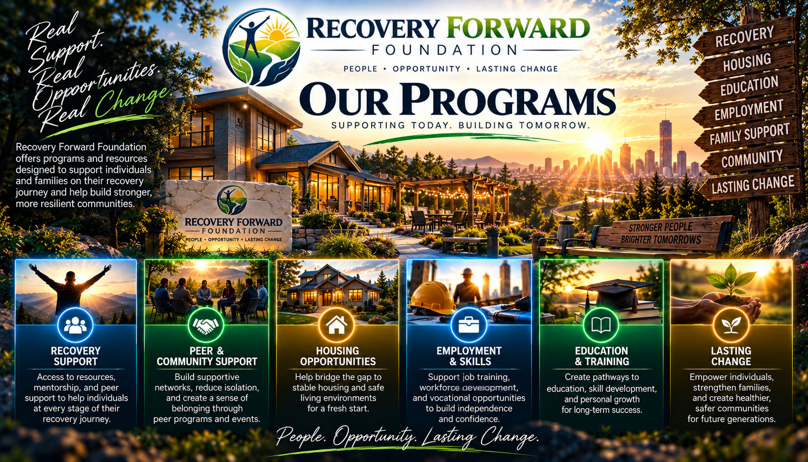
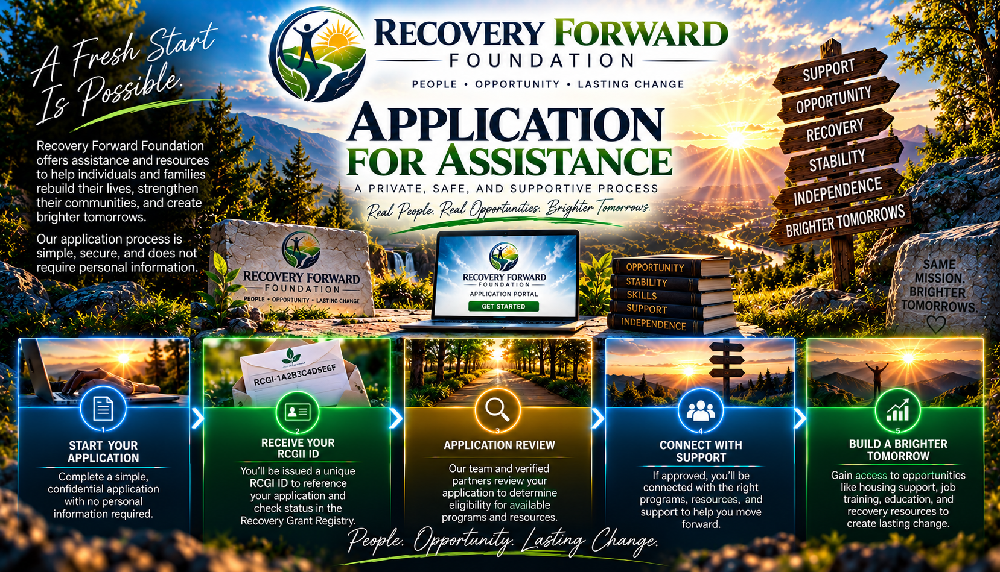

RECOVERY • STABILITY • OPPORTUNITY
SUPPORT FOR THE
ROAD FORWARD.
Recovery Forward Foundation is developing programs designed to help people overcome practical barriers while building stable, independent lives during and after addiction recovery.

OUR PROGRAMS
Recovery is more than staying sober.
Long-term recovery often means rebuilding employment, transportation, education, finances, relationships, housing stability, and confidence.
Our programs are being designed to help remove some of the practical barriers that can stand between recovery and independence.
Recovery Milestone Grants
A grant program being developed to recognize meaningful recovery milestones and provide approved participants with assistance that can help support their continued progress.
Eligibility, verification requirements, available funding, and grant amounts will depend on the foundation's approved program rules and resources.
Employment & Career Support
Employment can be one of the strongest foundations for independence.
This program area is intended to support needs such as job readiness, work-related requirements, certifications, training, and other barriers to entering or returning to the workforce.
Education & Skills
Recovery can open the door to an entirely new direction in life.
Educational assistance may support eligible opportunities such as vocational programs, certifications, skills development, and other pathways toward long-term self-sufficiency.
Transportation Assistance
Getting to treatment, work, meetings, interviews, education, and important appointments can become difficult without reliable transportation.
Transportation assistance is intended to help eligible participants overcome those barriers when resources are available.
Stability & Rebuilding
Starting over often comes with everyday obstacles that can quickly become overwhelming.
This program area is being designed around practical needs that contribute to stability, independence, and continued recovery.
Recovery Resources
No single organization can provide every resource someone may need.
Recovery Forward Foundation intends to help connect participants with appropriate community, educational, employment, and recovery-oriented resources whenever possible.
MILESTONE PROGRAM
Progress that can be verified.
The Recovery Forward grant system is being designed around a structured application and verification process.

Application
A participant submits a privacy-conscious application and receives a unique RCGI ID.
Milestone Pending
The participant works toward the recovery milestone required by the applicable program.
Verification
An approved verification process confirms that applicable program requirements have been met.
Eligibility Review
Meeting a milestone can make an applicant eligible for consideration. Eligibility does not by itself guarantee funding.
Approval
Eligible assistance is reviewed under the foundation's program rules, available resources, and authorization procedures.
Forward
Approved assistance can then be documented and provided through the applicable program process.
PRIVACY-CONSCIOUS BY DESIGN
Your RCGI ID

Recovery Forward Foundation's application system is being developed around unique Recovery Community Grant identifiers, or RCGI IDs.
Instead of displaying an applicant's name, Social Security number, home address, or other unnecessary personal information in the public grant registry, an application can be referenced by its RCGI ID.
Applicants should keep their RCGI ID because it may be needed to check application and grant status.
PROGRAM NOTICE
Programs are being developed.
Recovery Forward Foundation is building its programs, funding processes, governance procedures, and verification systems.
Submission of an application does not guarantee eligibility, approval, financial assistance, or a particular grant amount.
Program availability will depend on approved policies, available funding, eligibility requirements, and the foundation's ability to provide assistance.
YOUR NEXT STEP FORWARD
Building something better starts with a step.
Explore the application process and learn how the Recovery Forward system is being built to support people working toward lasting recovery.